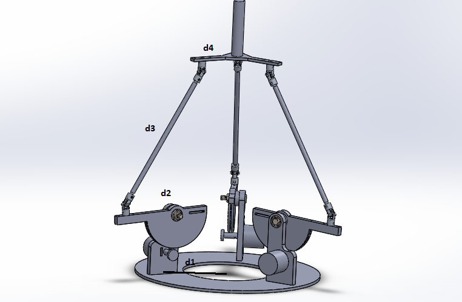
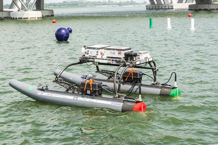
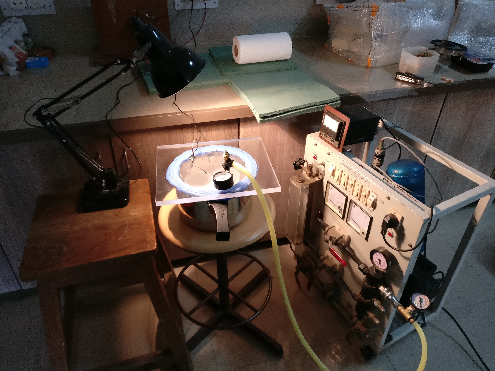
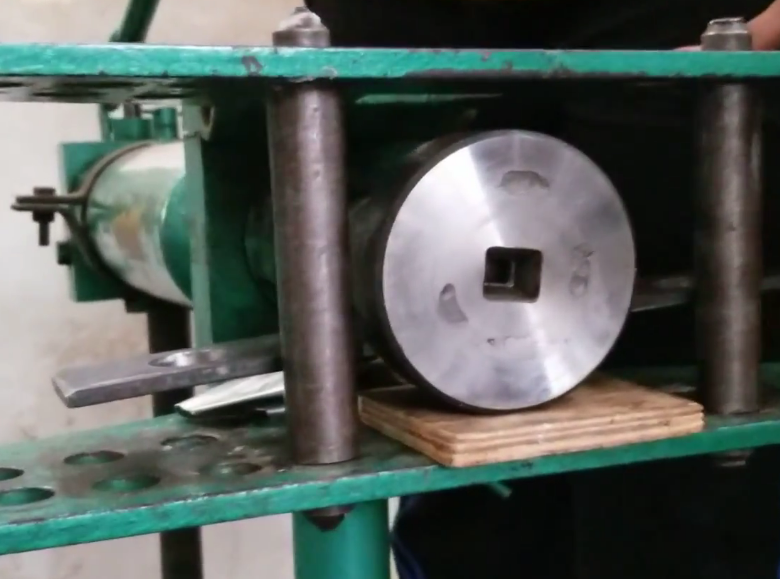

Multi-DOF Parallel Haptic Arm
Jan-May 2020
Worked on the project titled "The design and prototype development of a Multi-DOF Parallel Haptic Arm". The objective was to build a Multi-DOF Parallel Arm and use it as a Haptic Controller to control the robots working in a remote environment. I designed and fabricated cable-driven rotary actuators to recreate force sensations with the objective of improving the operator’s performance in remote environments. Successfully able to achieve a good end-effector trajectory tracking accuracy while handling a task remotely. I was the lead designer and programmer of this robot. I lead the whole project from start to finish. During this internship, I learned new concepts about haptic technology and realized the potential of Virtual Reality.
Path Planning & Obstacles Avoidance Algorithm for USVs
May-July 2019
I worked on planning the energy-efficient paths (as a series of waypoints or headings) for WAM-V 16 Unmanned Surface Vehicle (USV). Using the Artificial Potential Field method, I developed algorithms to compute the exact shortest-time global paths even when the vehicle is affected by strong and dynamic ocean-currents and wind forces. The efficiency of my algorithm was tested in a simulated environment. We observed that the optimal path took less time than the straight path. In the case of USVs, one has to deal with the uncertainty of the ocean. External Wind forces and ever-changing Water Current could affect the orientation or position of the USV. Keeping all these effects of external forces in mind I have developed an algorithm. All the experiments were conducted in the Atlantic Ocean.
In-Helmet Spacesuit Device
March-Dec 2018

Astronauts occupy spacesuits during extravehicular activities (spacewalks for experiments, maintenance, installation of modules on the International Space Station etc.) and also during the launch/return of the spacecraft to/from the Earth. During these long periods of time, substances such as sweat, irritants, moisture, coolant, antifogging agents from the helmet visor etc. may interact with the astronauts’ eyes and facial region, causing debilitating pain, discomfort and also temporary loss of vision in some cases. These substances cannot be cleaned off manually due to the inaccessible and sealed nature of the inside of a spacesuit helmet in operating condition.
The device is to be attached inside a spacesuit helmet, composed of sweeping robotic arms with absorbent and cleaning heads which would effectively remove the undesirable substances and provide relief, hence enabling the astronauts to operate unhindered and undistracted during spacesuit activities
The device would be mounted on the snoopy cap of a concerned astronaut. Some information regarding the design and torque calculation is given here.
The design shown above is not the real one. We'll publish papers soon...
Quadruped Robot
July - Dec 2018

The Robot has 12 DOF, each limb with 3 DOF. Designed with SolidWorks and visualized by rviz (ROS). Successfully completed Design and Simulation stage. I bagged full score in Mini Project -1 for the Design and Simulation of Quadruped Robot. The project gave me a good understanding of kinematics and dynamics of the robot. I have also performed simulations of various gaits like Trot, Gallop, and Bound using MATLAB and Pybullet.
A Test Chamber for the testing of various absorbency materials in low pressure environments
March-Dec 2018
The objective of This project was to choose an optimal absorbency material for the In-helmet spacesuit device. So this project is essential for the development of The In-helmet Spacesuit device. We have investigated the effects of vacuum pressures and different contaminants on the absorptivity of various absorbency materials. Contaminants could be tears, sweat, Anti-fog Agent or combination of them. 165 absorbency test results have been obtained by using a novel testing chamber. The testing chamber is consist of an actuating mechanism which has the capacity to hold 4 materials at a time. The mechanism will dip all the absorbency materials in the contaminant liquids at different vacuum environments. The purpose of the project is to choose the best absorbency material(garment), which would effectively absorb different contaminants like tears, water with Anti-fog Agent, etc. The vacuum test chamber with actuating mechanism is designed to test four materials at a time. This project was funded by IdeaLab, Nirma University.
Extrusion Die
March-April 2018
Extrusion is a process used to create objects of a fixed cross-sectional profile. A material is pushed through a die of the desired cross-section. We have developed a square face extrusion die which can be used to extrude ductile materials like copper, aluminum etc. We have successfully tested it with wax. We also did a study on effects of Extrusion pressure, Die angle, Material’s flow from die’s outlet etc and also did CFD( Computational Fluid Dynamics) Analysis of Extrusion process. It was a group project. We were guided by Prof. Nilesh Ghetiya. Team members: 7 My work: I worked on CFD Analysis Click here to see the result